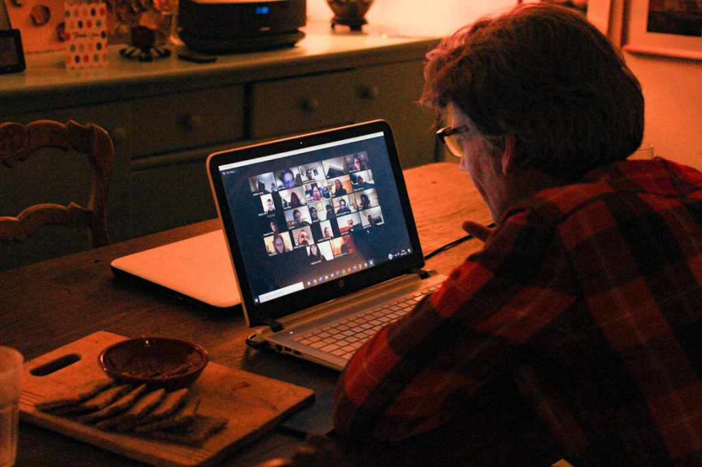
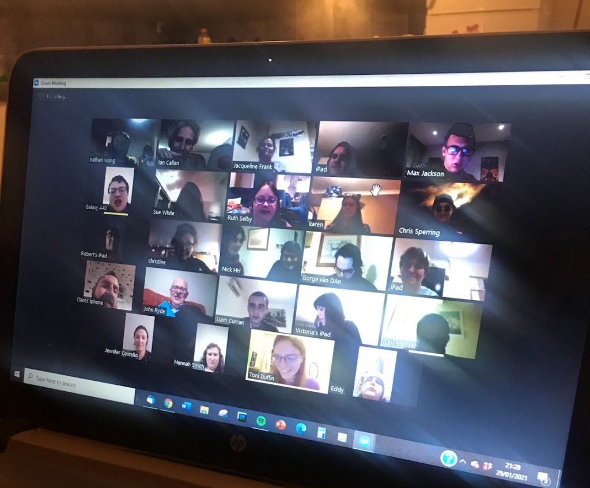

The Magic of Coming Together
It has been a bumpy time for everyone during the last year. However, it has been a rollercoaster ride for people working in the tourism industry. A ride mostly taking you downwards and surrounded in thick fog. I run a successful supported holiday company for people with autism, learning disabilities and other hidden disabilities, and in the last 12 months we have only been able to operate 2 holidays. The year 2020 was to be our 10-year anniversary and we had put together a celebratory holiday program with exciting, cultural and exotic destinations.
Not being able to run our holidays has been a great disappointment to us, not just for the financial side but for missing the chance to get together with our loyal guests. Over the last 10 years we have built up a following of people who come back year after year. I put this down to the fact that we see and treat our guests as family and friends. We miss each other and look forward to meeting up, spending time with one another and exploring together our holiday destination. It is a collective experience and we have come to realise, that for Neil (fellow director and co founder) and I, our holidays have become a form of lifestyle for us. Not having these holidays has made us realise what we have, and what it means to us and our guests. There has been a sense of mourning or pining among all of us.
We wanted to address the fact that we haven’t seen many of our guests for over a year, so we organised a weekend of Zoom calls, which we hadn’t done previously. We scheduled three meetings, all at 8pm, for one hour, with topics of discussion including, joke of the day, funny holiday memories and what you’re doing in the week ahead that you are looking forward to. We tried our best to give everyone a chance to speak, to talk and to sing even. We had on average of 25 people per evening, all of our faces appearing on the screen in a grid, and after the initial “you’re still on mute” and “you have to turn your video on”, banter, we all settled down and it began to feel like we were on holiday together again, accept the destination was a virtual one. Zoomland.
We have had some great feedback about the meetings from the guests, their parents and carers and people are asking when the next ones will be. We will be slotting these calls in once a month. The value of coming together to talk and to see each other is priceless, we all received a huge morale boost, which everyone wants in these uncertain times.
Hopefully we will be able to get together this year in person as well and run as many of our 2021 holidays. Not being able to get together has taught me the value of collectiveness, how we can take being in a group for granted.
17 February 2021


Related posts


Go Beyond Holidays is an independent agent for 360 Private Travel. All flights and flight-inclusive holidays on this website are financially protected by the ATOL scheme.
Phone number 00 44 7904 878365
E-mail: info@gobeyondholidays.com

Registered Name & Address:
360 Private Travel Limited, 54 High Street, Sevenoaks, TN13 1JG, United Kingdom,
Registration Number: 8512928. Registered in England & Wales
VAT Number: 163818688 ATOL 7514 IATA 91-2 0005 6 Virtuoso Member Number 3251
An independent affiliate of

360 Private Travel is a member of Virtuoso, allowing Go Beyond Holidays access to preferential rates and exclusive benefits at some of the finest hotels around the world.
For Your Financial Protection